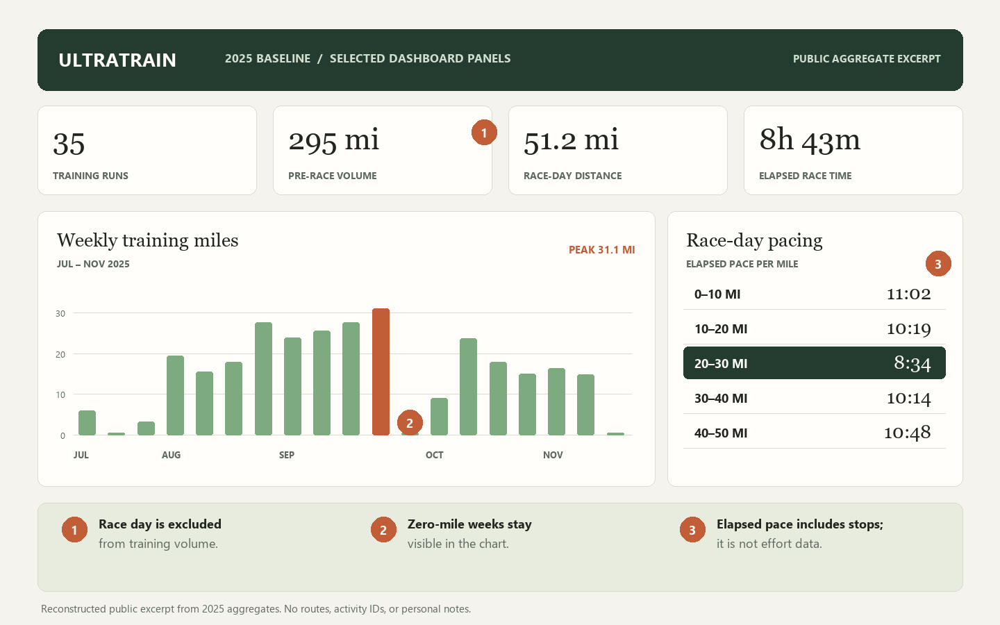

UltraTrain / Product + data case study / 2026–2027
What a 50-mile race
can teach a 100-mile build.
I turned a Strava account export into a private training dashboard: one that reconstructs my first ultramarathon build, shows race-day pacing, and makes a 28-week plan measurable as new runs arrive.
The 2025 baseline
- Pre-race training runs
- 35
- Training volume
- 295 mi
- Race elapsed time
- 8h 43m

01 / The question
A result is not an explanation.
The 50-mile finish gave me a result, but it did not explain how my training varied or which patterns deserved attention. I built a local tool to separate training from race day, summarize weekly volume, approximate elapsed pacing, and compare future planned workouts with recorded activity.
Descriptive analytics today. No validated 100-mile finish prediction.
02 / The evidence
The build was uneven. That matters.
The account export shows 295 training miles across 35 runs before race day. Weekly mileage rose into September, then dipped sharply and fluctuated through November. The pattern is a baseline for asking better questions, not a recipe for the next race.
Weekly training miles
Peak 31.1 miSee the weekly mileage data
| Week of | Miles |
|---|---|
| Jul 14 | 6.0 |
| Jul 21 | 0.0 |
| Jul 28 | 3.2 |
| Aug 4 | 19.5 |
| Aug 11 | 15.5 |
| Aug 18 | 18.0 |
| Aug 25 | 27.6 |
| Sep 1 | 23.9 |
| Sep 8 | 25.6 |
| Sep 15 | 27.6 |
| Sep 22 | 31.1 |
| Sep 29 | 0.0 |
| Oct 6 | 9.1 |
| Oct 13 | 23.7 |
| Oct 20 | 18.0 |
| Oct 27 | 15.0 |
| Nov 3 | 16.4 |
| Nov 10 | 14.9 |
| Nov 17 | 0.0 |
03 / Race-day pacing
A finish time needs context.
Approximate elapsed pace by 10-mile section from the race track. The middle section was fastest; later sections slowed. Elapsed pace includes stops, and without heart rate, fueling, or effort notes I cannot identify the cause.
- 0–10 mi11:02per mile
- 10–20 mi10:19per mile
- 20–30 mi8:34per mile
- 30–40 mi10:14per mile
- 40–50 mi10:48per mile
The final 1.4 GPS miles are excluded from these equal-distance comparisons. Segment boundaries are approximate.
04 / The product
From export to a useful review.
UltraTrain reads my requested account export locally, checks and summarizes activities, and generates a static dashboard. It does not send the underlying workout data to a server.
- 01
Strava export
Activity summaries and a detailed race track.
- 02
Python pipeline
Filter runs, separate race day, calculate weekly volume and splits.
- 03
Private dashboard
Review the baseline and compare a plan with recorded training.
Explore the public code sample Runnable with synthetic data; the private export and dashboard are not included.
05 / Design decisions
The honest boundaries are part of the product.
- Keep zero-mile weeks
- Missing weeks stay visible so a chart cannot suggest uninterrupted growth.
- Flag ambiguity
- A checked-off workout recorded after midnight is flagged for review instead of silently matched.
- Do not invent physiology
- The export lacks heart-rate samples and consistent effort notes. Pace cannot establish fatigue or readiness.
06 / What comes next
The next 100 miles are new evidence.
As the 28-week Umstead build unfolds, I can add short effort, recovery, and fueling notes, refresh the account export, and compare planned versus recorded training. After the race, the project can assess which expectations held up. A predictive model would require a separate, larger dataset and a genuine evaluation.